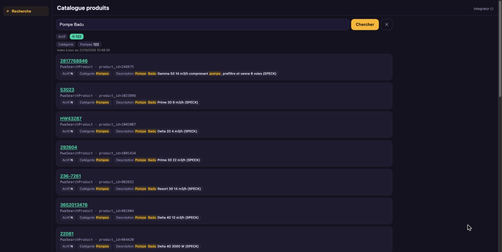
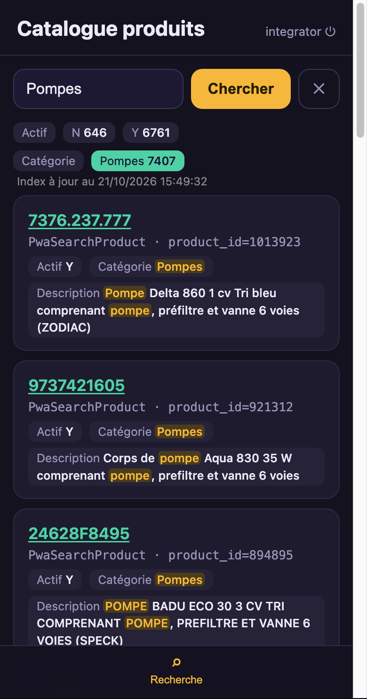

Search 40,000 products, facets included.
Two CSV exports, one entity, a SearchIndex, an app reduced to search. The hub indexes the declared columns; the PWA filters by facet.
manifests/10-products.yaml
apiVersion: connectors.lumnik.io/v1kind: Connectormetadata: name: pwa-search-products connector_type: csv-file scopes: [pwa-search]spec: transport: kind: local path: /tmp/lumnik-scenario/pwa_search/m_product.csv parser: has_header: true after_process: nonemanifests/15-product-categories.yaml
apiVersion: connectors.lumnik.io/v1kind: Connectormetadata: name: pwa-search-product-categories connector_type: csv-file scopes: [pwa-search]spec: transport: kind: local path: /tmp/lumnik-scenario/pwa_search/m_product_category.csv parser: has_header: true after_process: none$ lm validate -f manifests/10-products.yaml
✓ 10-products.yaml — valid
$ lm apply -f manifests/10-products.yaml
{"name":"pwa-search-products","connectorId":"9769c687-edba-4bc3-9315-cc179cd55dc3","endpointsApplied":1}
$ lm validate -f manifests/15-product-categories.yaml
✓ 15-product-categories.yaml — valid
$ lm apply -f manifests/15-product-categories.yaml
{"name":"pwa-search-product-categories","connectorId":"967c0e91-de4d-491a-b14c-583b95e6aa34","endpointsApplied":1}
$ lm connector run pwa-search-product-categories
run scheduled: 44cd73ab-8623-4b30-91cf-775b87ad6b37
$ lm run get 44cd73ab-8623-4b30-91cf-775b87ad6b37
ID CONNECTOR ENDPOINT STATUS IN OUT SKIPPED DEAD-LETTERS STARTED ENDED
44cd73ab pwa-search-product-categories default Completed 63 63 0 0 2026-10-21 15:48 2026-10-21 15:48
$ lm connector run pwa-search-products
run scheduled: 5aae2d9e-a39c-494e-8035-dba5d4ffbd98
$ lm run get 5aae2d9e-a39c-494e-8035-dba5d4ffbd98
ID CONNECTOR ENDPOINT STATUS IN OUT SKIPPED DEAD-LETTERS STARTED ENDED
5aae2d9e pwa-search-products default Completed 40233 40233 0 0 2026-10-21 15:48 2026-10-21 15:48- Connectors applied
- pwa-search-products, pwa-search-product-categories
evidence: replay.log · transform v1
manifests/20-product.yaml
kind: Entityname: PwaSearchProductlabel: Article du cataloguedescription: "Articles du catalogue, enrichis avec leur catégorie. Une ligne représente un article."match: [product_id]scopes: [pwa-search]columns: product_id: label: "Identifiant de l'article" category_id: label: "Identifiant de la catégorie" category_name: label: "Catégorie" category_description: label: "Description de la catégorie" reference: label: "Référence" description: label: "Description" active: label: "Actif"sources: - table: t_pwa_search_products map: m_product_id: product_id m_product_category_id: category_id name: reference description: description isactive: activejoins: - table: t_pwa_search_product_categories from: category_id to: m_product_category_id map: name: category_name description: category_description$ lm entity apply -f manifests/20-product.yaml
Applied entity "PwaSearchProduct" → connector."v_pwasearchproduct"- PwaSearchProduct
- v_pwasearchproduct
evidence: replay.log · transform v1
manifests/30-product-search.yaml
apiVersion: search.lumnik.io/v1kind: SearchIndexmetadata: name: pwa-search-productsspec: entity: PwaSearchProduct titleField: reference language: french fields: - name: reference match: prefix - name: description match: text - name: category_name match: text facet: true - name: active facet: true links: - field: reference url: "https://erp.example.com/articles/{reference}"$ lm search apply -f manifests/30-product-search.yaml
Applied search index "pwa-search-products" → entity PwaSearchProduct (valid)
$ lm search rebuild pwa-search-products --wait --timeout 10m
Name pwa-search-products
Status ready
Live generation 67
Documents 40233
Lag 1s
Last rebuild d6f364a5-3016-48e7-aba1-5769b2e0baff (ready)- SearchIndex
- pwa-search-products
- Status
- ready
- Documents indexed
- 40233
evidence: replay.log · transform v1
manifests/40-pwa-search-app.yaml
apiVersion: apps.lumnik.io/v1kind: Appmetadata: name: pwa-searchspec: title: Catalogue produits scope: pwa-search icon: generic theme: accentColor: "#4fd1a5" backgroundColor: "#f4f1ea" tabs: [search] default: false$ lm app apply -f manifests/40-pwa-search-app.yaml
Applied app "pwa-search" → scope pwa-search
tabs: search- App
- pwa-search
- Tabs
- search
evidence: replay.log · transform v1


$ lm search query "Pompe Badu" --entity PwaSearchProduct --limit 5
ENTITY KEY SCORE MATCH
PwaSearchProduct product_id=872758 0.19 category_name=*Pompes* | description=*Pompe* *Badu* Eco 50 750 W comprenant *pompe*, préfiltre et… | active=Y | reference=3273765
PwaSearchProduct product_id=726711 0.19 category_name=*Pompes* | description=*Pompe* *Badu* Prime 25 10 m3/h comprenant *pompe*, préfiltr… | active=Y | reference=85217
PwaSearchProduct product_id=246675 0.19 category_name=*Pompes* | description=*Pompe* *Badu* Gamma 50 14 m3/h comprenant *pompe*, prefiltr… | active=N | reference=2817768846
PwaSearchProduct product_id=894895 0.18 category_name=*Pompes* | description=*POMPE* *BADU* ECO 30 3 CV TRI COMPRENANT *POMPE*, PREFILTRE… | active=Y | reference=24628F8495
PwaSearchProduct product_id=1041861 0.18 category_name=*Pompes* | description=*Pompe* *Badu* Gamma 30 18 m3/h (SPECK) | active=Y | reference=750505
facets:
active N (122) Y (1164)
category_name Pompes (1286)
5 hits shown · as of 2026-10-21 15:48
more: lm search query 'Pompe Badu' --entity PwaSearchProduct --limit 5 --cursor eyJzY29yZSI6MC4xNzU5NDcyNDg5MzU2OTk0Niwic2VhcmNoSW5kZXgiOiJwd2Etc2VhcmNoLXByb2R1Y3RzIiwiZG9jdW1lbnRJZCI6IjF8NzoxMDQxODYxIiwiZmluZ2VycHJpbnQiOiJzaGEyNTY6Yjg1YzgzOTlkYTQ2NDMzM2QwYTg0YWRlOTE1NWU1MzRjMTk3MTgwMWZjYTYxOWI5YmNhYTE0ODU0MDM1NmQ2MiIsImVsaWdpYmxlIjp7InB3YS1zZWFyY2gtcHJvZHVjdHMiOjY3fX0
$ lm search query Pompes --entity PwaSearchProduct --facet category_name=Pompes --limit 5
ENTITY KEY SCORE MATCH
PwaSearchProduct product_id=1013923 0.08 category_name=*Pompes* | description=*Pompe* Delta 860 1 cv Tri bleu comprenant *pompe*, préfiltr… | active=Y | reference=7376.237.777
PwaSearchProduct product_id=921312 0.08 category_name=*Pompes* | description=Corps de *pompe* Aqua 830 35 W comprenant *pompe*, prefiltre… | active=Y | reference=9737421605
PwaSearchProduct product_id=894895 0.08 category_name=*Pompes* | description=*POMPE* BADU ECO 30 3 CV TRI COMPRENANT *POMPE*, PREFILTRE E… | active=Y | reference=24628F8495
PwaSearchProduct product_id=872758 0.08 category_name=*Pompes* | description=*Pompe* Badu Eco 50 750 W comprenant *pompe*, préfiltre et v… | active=Y | reference=3273765
PwaSearchProduct product_id=726711 0.08 category_name=*Pompes* | description=*Pompe* Badu Prime 25 10 m3/h comprenant *pompe*, préfiltre … | active=Y | reference=85217
facets:
active N (646) Y (6761)
category_name Pompes (7407)
5 hits shown · as of 2026-10-21 15:48
more: lm search query Pompes --entity PwaSearchProduct --facet 'category_name=Pompes' --limit 5 --cursor eyJzY29yZSI6MC4wODI3NDU2MzQwMTkzNzQ4NSwic2VhcmNoSW5kZXgiOiJwd2Etc2VhcmNoLXByb2R1Y3RzIiwiZG9jdW1lbnRJZCI6IjF8Njo3MjY3MTEiLCJmaW5nZXJwcmludCI6InNoYTI1NjozM2Q0ZTg2NjdjYzQ5YjU0YzA5ZDQzNjk2NGFkZWVmYjAwNmNmMGU0ZDkxN2QxMGQ0ZjljNjdhNWVhMTBhZTViIiwiZWxpZ2libGUiOnsicHdhLXNlYXJjaC1wcm9kdWN0cyI6Njd9fQ- « Pompe Badu »
- category_name=Pompes 1286 · active=Y 1164 · active=N 122
- « Pompes », Pompes facet
- category_name=Pompes 7407 · active=Y 6761 · active=N 646
evidence: replay.log · transform v1
Limits
- Word and prefix search; no semantic search.
- No Search tab without a Search provider (Pro edition).
- spec.tabs picks the navigation; access rights stay the hub's.
- Synthetic data.
- The data and the PWA are French: the screenshots show the app as a French user sees it.